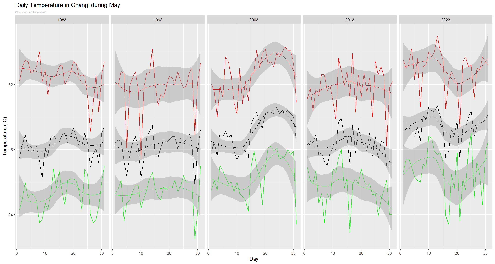

pacman::p_load(tidyverse, haven, ggplot2, ggrepel, patchwork, ggthemes, hrbrthemes, ggdist, ggridges, colorspace, gridExtra,cowplot, plotly, ggiraph)Take-Home_Ex03: Be Weatherwise or Otherwise
1 Overview
According to an office report as shown in the infographic below,
Daily mean temperature are projected to increase by 1.4 to 4.6, and
The contrast between the wet months (November to January) and dry month (February and June to September) is likely to be more pronounced.
2 Data Preparation
2.1 Loading R Packages
In this take home exercise, the following R packages will be used:
The code chunk used is as follows:
2.2 Importing Temperature Data
Changi will be selected for the weather station, and temperature chosen as the factor to be analysed. The data sets will be downloaded from historical daily temperature from Meteorological Service Singapore website, Specifically, we will be looking from the years 1983, 1993, 2003, 2013, and 2023, with May as the specific month of study.
temp1983 <- read_csv("data/DAILYDATA_S24_198305.csv", locale=locale(encoding="latin1"))
temp1983 <- temp1983 %>%
select(Year, Month, Day,
`Mean Temperature (°C)`,
`Maximum Temperature (°C)`,
`Minimum Temperature (°C)`)temp1993 <- read_csv("data/DAILYDATA_S24_199305.csv", locale=locale(encoding="latin1"))
temp1993 <- temp1993 %>%
select(Year, Month, Day,
`Mean Temperature (°C)`,
`Maximum Temperature (°C)`,
`Minimum Temperature (°C)`)temp2003 <- read_csv("data/DAILYDATA_S24_200305.csv", locale=locale(encoding="latin1"))
temp2003 <- temp2003 %>%
select(Year, Month, Day,
`Mean Temperature (°C)`,
`Maximum Temperature (°C)`,
`Minimum Temperature (°C)`)temp2013 <- read_csv("data/DAILYDATA_S24_201305.csv", locale=locale(encoding="latin1"))
temp2013 <- temp2013 %>%
select(Year, Month, Day,
`Mean Temperature (°C)`,
`Maximum Temperature (°C)`,
`Minimum Temperature (°C)`)temp2023 <- read_csv("data/DAILYDATA_S24_202305.csv", locale=locale(encoding="latin1"))
temp2023 <- temp2023 %>%
select(Year, Month, Day,
`Mean Temperature (°C)`,
`Maximum Temperature (°C)`,
`Minimum Temperature (°C)`
)
colnames(temp2023)[colnames(temp2023) == 'Maximum Temperature (°C)'] <- 'Maximum Temperature (°C)'
colnames(temp2023)[colnames(temp2023) == 'Mean Temperature (°C)'] <- 'Mean Temperature (°C)'
colnames(temp2023)[colnames(temp2023) == 'Minimum Temperature (°C)'] <- 'Minimum Temperature (°C)'
Note
Unlike the dataset extracted for the earlier years, the column names for the temperatures in May 2023 were coded with an additional “”. To align the naming nomenclauture across the different datsets, colnames from base R was used to remove the “”.
Lastly, using the code chunk below, we will combine the five datasets into a single document, and save it as a new dataset.
combinedTemp <- bind_rows(temp1983,temp1993,temp2003,temp2013,temp2023)
write_rds(combinedTemp, "data/combinedTemp.csv")combinedTemp <- read_rds("data/combinedTemp.csv")2.3 Summary Statistics of Data
Displaying the first five rows using head()
head(combinedTemp)# A tibble: 6 × 6
Year Month Day `Mean Temperature (°C)` `Maximum Temperature (°C)`
<dbl> <dbl> <dbl> <dbl> <dbl>
1 1983 5 1 27.5 32.2
2 1983 5 2 28.3 33.1
3 1983 5 3 28.9 33.5
4 1983 5 4 28.1 33.4
5 1983 5 5 28.2 32.7
6 1983 5 6 27.9 32.8
# ℹ 1 more variable: `Minimum Temperature (°C)` <dbl>
Note
The data table seemed to be in order.
str(combinedTemp)tibble [155 × 6] (S3: tbl_df/tbl/data.frame)
$ Year : num [1:155] 1983 1983 1983 1983 1983 ...
$ Month : num [1:155] 5 5 5 5 5 5 5 5 5 5 ...
$ Day : num [1:155] 1 2 3 4 5 6 7 8 9 10 ...
$ Mean Temperature (°C) : num [1:155] 27.5 28.3 28.9 28.1 28.2 27.9 28.2 27.3 26.2 28.1 ...
$ Maximum Temperature (°C): num [1:155] 32.2 33.1 33.5 33.4 32.7 32.8 33.1 34 32.2 32.9 ...
$ Minimum Temperature (°C): num [1:155] 24.3 25 26 25 25.3 25.2 24.9 23.5 23.7 24.7 ...
Note
The data types are all correct.
Checking for missing values
sum(is.na(combinedTemp))[1] 0
Note
No missing values were found.
3 Static Data Visualisation

ggplot() +
geom_line(data=combinedTemp,
aes(x=Day,
y=`Mean Temperature (°C)`,
group=Year),
colour="black") +
geom_line(data=combinedTemp,
aes(x=Day,
y=`Maximum Temperature (°C)`,
group=Year),
colour="red") +
geom_line(data=combinedTemp,
aes(x=Day,
y=`Minimum Temperature (°C)`,
group=Year),
colour="green") +
facet_grid(~Year) +
labs(axis.text.x = element_blank(),
title = "Daily Temperature in Changi during May") +
xlab("Day") +
ylab("Temperature (°C)")